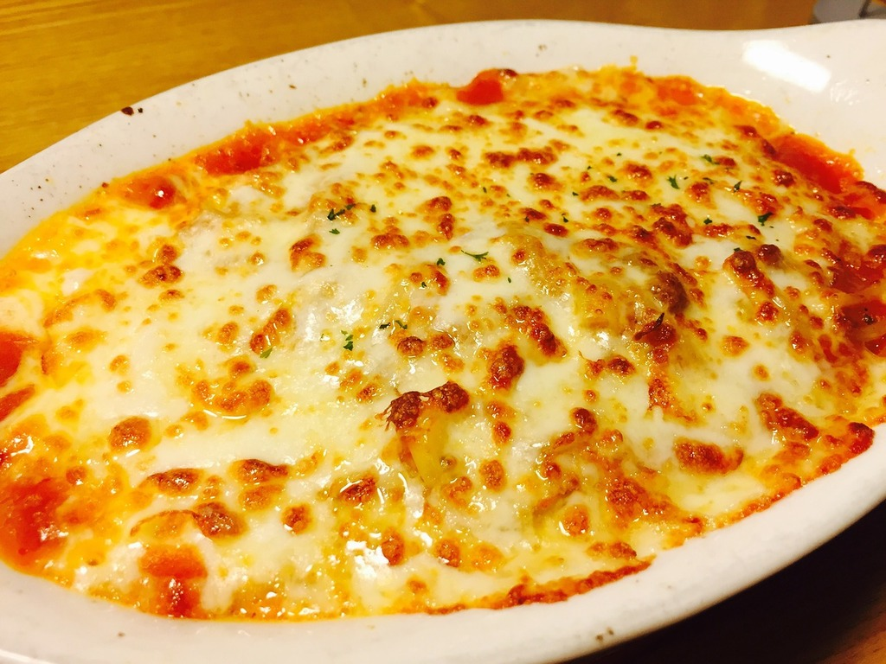

Home
Creamy Chicken Lasagna

Description
Creamy chicken lasagna is a comforting twist on the classic Italian favorite, layered with tender seasoned chicken, silky béchamel sauce, lasagna noodles, and plenty of melted cheese. Each bite combines rich, creamy flavors with savory herbs, sautéed vegetables, and a golden, bubbly topping that makes this dish irresistibly satisfying.
Perfect for family dinners, gatherings, or cozy nights at home, this creamy lasagna is hearty, indulgent, and easy to customize. Serve it with a fresh green salad or warm garlic bread for a complete and delicious meal.
Ingredients
- Lasagna noodles 9-12 sheets
- Cooked shredded chicken 3 cups
- Butter 4 tablespoons
- All-purpose flour 4 tablespoons
- Milk 3 cups
- Heavy cream 1 cup
- Garlic, minced 3 cloves
- Parmesan cheese, grated ½ cup
- Mozzarella cheese, shredded 2 cups
- Ricotta cheese 1½ cups
- Spinach, chopped 2 cups
- Onion, finely chopped 1 small
- Italian seasoning 1 teaspoon
- Salt 1 teaspoon
- Black pepper ½ teaspoon
- Olive oil 1 tablespoon
Steps
-
Preheat the oven to 375°F (190°C). Cook the lasagna noodles according to the package instructions, then drain and set aside.
-
Heat the olive oil in a pan. Sauté the onion and garlic until softened, then add the spinach and cook until wilted. Stir in the shredded chicken, Italian seasoning, salt, and pepper.
-
To make the creamy sauce, melt the butter in a saucepan. Whisk in the flour and cook for 1 minute. Gradually add the milk and heavy cream, whisking until smooth and thickened.
-
Remove the sauce from the heat and stir in the Parmesan cheese.
-
Spread a little sauce in the bottom of a greased baking dish. Add a layer of noodles, chicken mixture, ricotta, creamy sauce, and mozzarella. Repeat the layers, finishing with sauce and mozzarella on top.
-
Cover with foil and bake for 25 minutes. Remove the foil and bake for another 10-15 minutes, until golden and bubbly.
-
Let the lasagna rest for 10 minutes before slicing and serving.